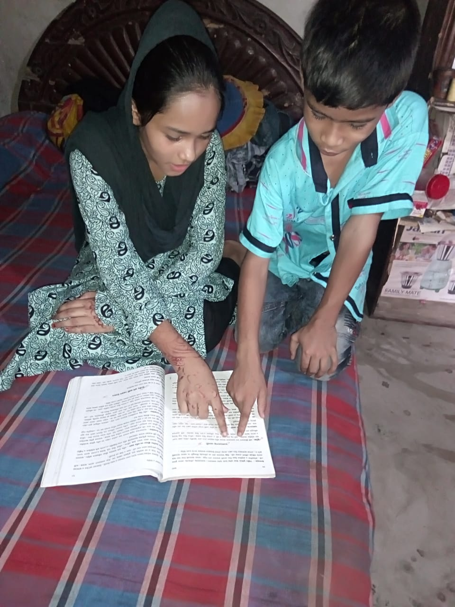

Afshana Arfin Mimi in her home
The Story of Afshana Arfin Mimi:A Talented Struggling in Slum
Mimi comes from a small town in Bangladesh called Saidpur.Her father Mr.Md Aftab Hossain is a day laborer and her mother Mst.Laky Begum is a tailor by occupation.Mimi was born 5th January 2009 in Shaheb para Saidpur-5310,Nilphamary.She has four members in her family.She has a younger brother Rakib he is eight years old.Her father had a hard time finding a goood job and feeding their family.He started working as a day laborer but his earning was not good enough to send two of their childrens to school.Because it was tough to provide the family members with a proper meal.This is the story of thousand of children living in a slums.Poor rural families have to sacrifice the education of their childrens,especially girl,for meeting the bare minimum cost of food,rent and transport.When her father just started to contribute to the family,unfortunately he lost his job.Later her mother joined garments factory in order to financially contribute to their family.Mimi always wanted to study since chlidhood.She had a great enthusiasm for study.After seeing her love and effort for study her parents decided to give her the light of education.One day her parents heard about RBNS(Ramnathpur Bahumukhi Nabayan Shangha) from one of their neighbors and in the year 2016,they bought her to the TAGORE LEARNING CENTER BANGLADESH DoPeace.org project.
Afshana Arfin Mimi with her brother

In Bangladesh,Slum families have to sacrifice the education of their children,Particularly girls,teenage girls in slums,very often fall victim to sexual harassment which leads to their droping out of school or work and compel their helpless parents to marry them off at a tender age.Mimi is an exception among many of the under privileged girls.She has started to get good grades in her school exams from the very beginning and never failed to attend her classes.In the year of 2018,Mimi participated in PSC(Primary School Certificate) examination which is National Education Board Examination in Bangladesh and She got GPA-5.00 in all her subjects.Right now,She is studing in grade eight in her school and getting all sort of support from the RBNS(Ramnathpur Bahumukhi Nabayan Shangha)project,Such an educational materials,health education etc.Not only Mimi but also all the childrens in slums like Mimi are receiving education and their family is also showing great interest in their childrens education.
Afshana Arfin Mimi with her family
Now,all of them are very grateful to DoPeace.org project for making their life a better one and obtaining an oportunity to make a better future.DoPeace organization has only one aim "Enable Children in the Slums of the world get sustainable and high quality of education at low cost while creating a strong partnership with the communities involved" Everyone should have this perception only then the world will be a better place to live lively.